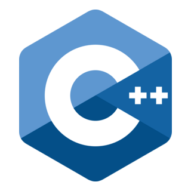
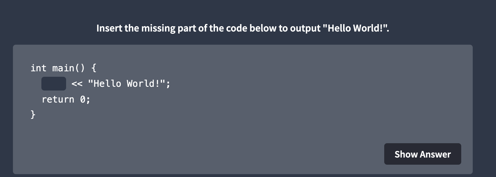
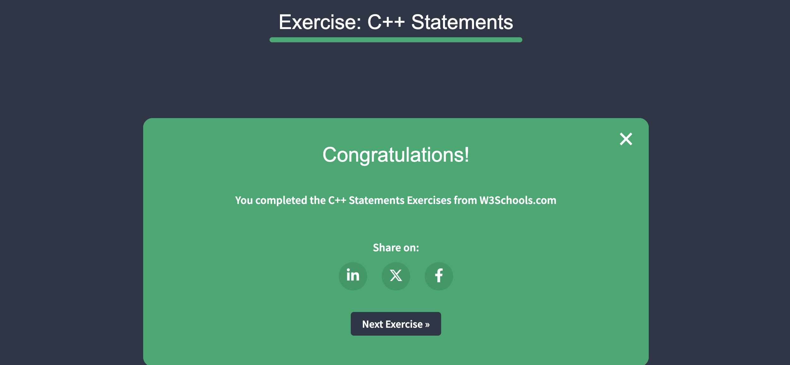
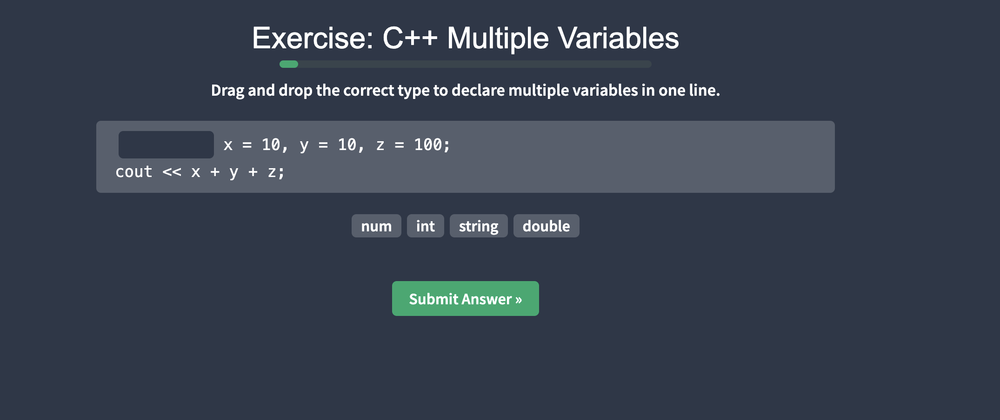
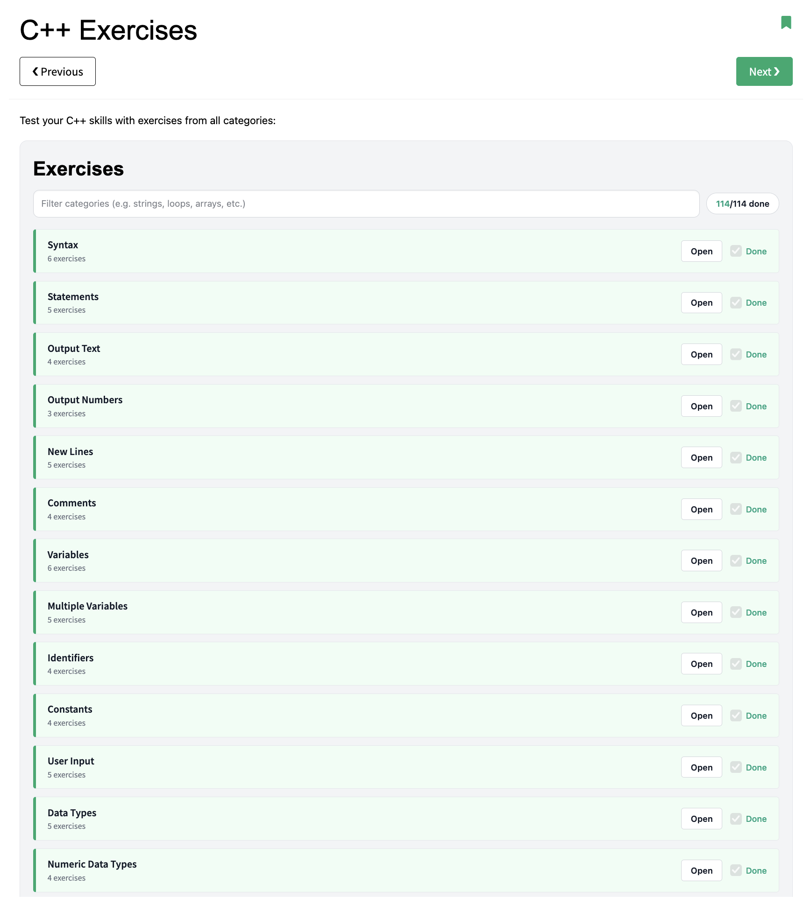
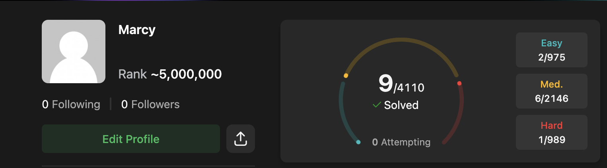
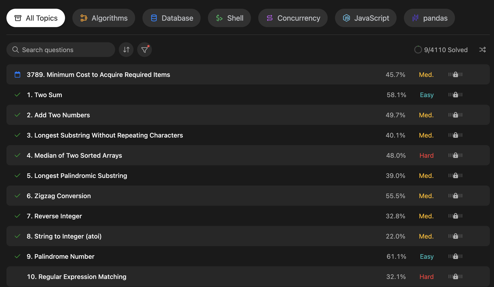

Goal 4 / Develop introductory skills within the C++ language
As an opportunity to broaden my existing programming experience, I intended to develop introductory skills with the C++ programming language. Having no prior experience with C++, I identified this as an opportunity to expose myself to a new language, expanding my existing knowledge base. As developing familiarity with multiple programming languages is invaluable within the computing industry, this would also make me more desirable to prospective employers by offering a wider skillset and potentially different approaches to problem-solving.
To achieve this, I committed myself to:
These activities would establish a foundation in C++, allowing me to apply my existing programming knowledge while developing the ability to independently comprehend and write basic programs.
Read through and completed all 114 C++ exercises on W3Schools covering all fundamental programming concepts within the language, as well as syntax, data types, and other key information.




Completed LeetCode problems weekly for 9 weeks apply my C++ knowledge learned throughout the W3Schools exercises as I go.

